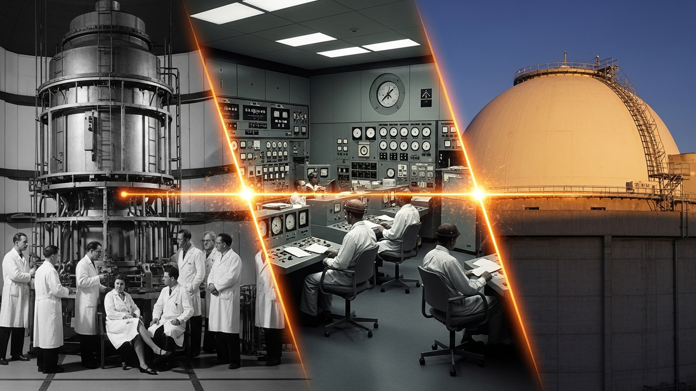
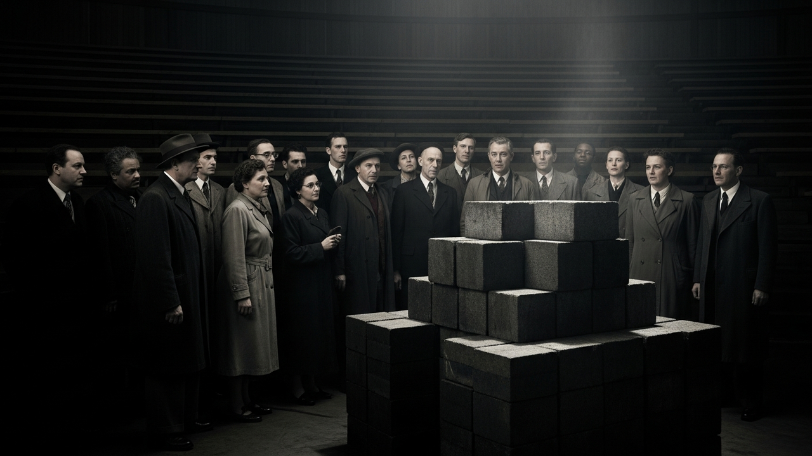
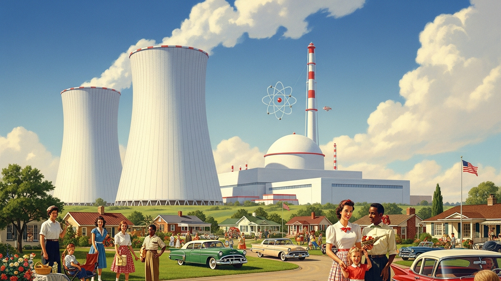
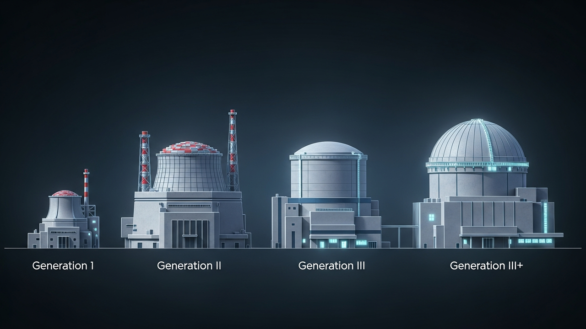
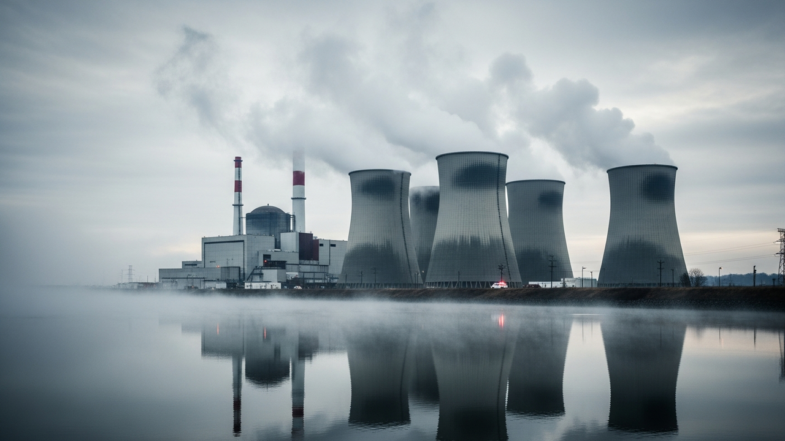
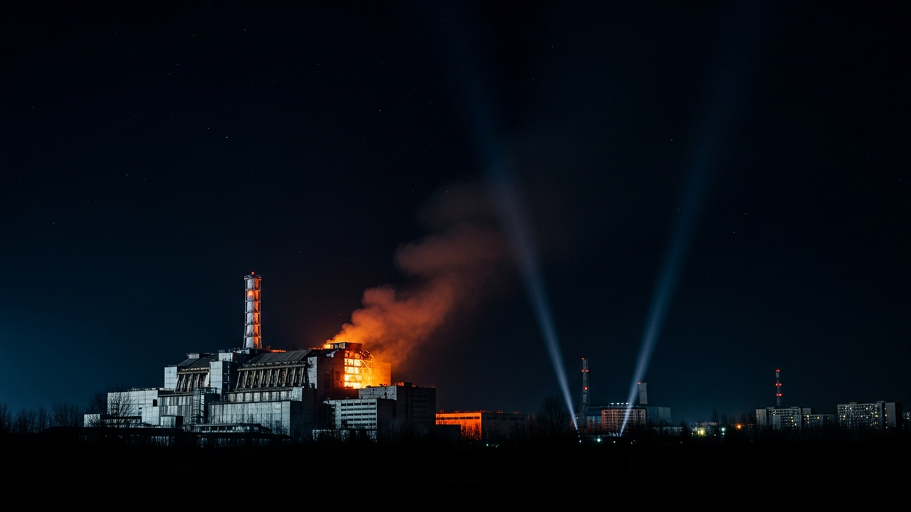
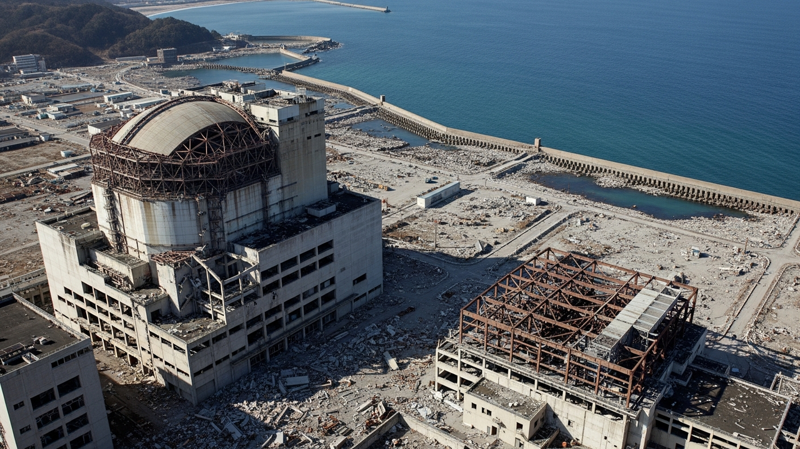
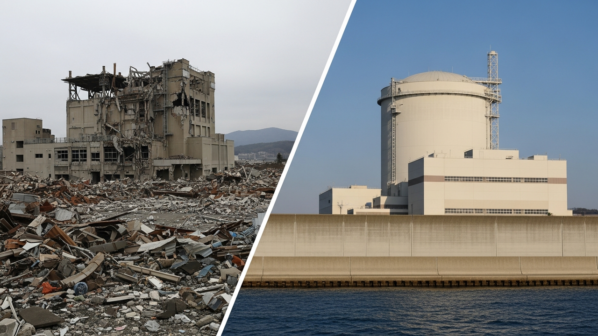
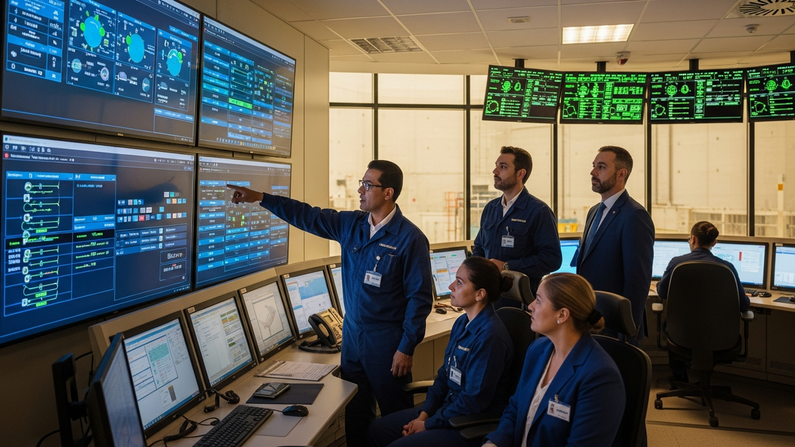

History & Development
From wartime origins to modern safety culture: how eight decades of nuclear power shaped the industry we know today—and the lessons written in accident reports.

The Birth of Nuclear Power
The same physics that ended World War II would soon promise to power the world.
The Manhattan Project (1942-1945)
In 1939, Albert Einstein signed a letter to President Roosevelt warning that Nazi Germany might be developing an atomic bomb. This sparked what would become the largest scientific project in history—the Manhattan Project.

130,000 people worked on the project across multiple sites. The cost: $2 billion (approximately £28 billion in today's money). Most workers had no idea what they were building.
On 2nd December 1942, beneath the stands of a Chicago stadium, Enrico Fermi achieved the first controlled nuclear chain reaction. The reactor ran for just 28 minutes—but those minutes changed everything.
Three years later, the Trinity test proved the weapon worked. Within weeks, atomic bombs destroyed Hiroshima and Nagasaki, ending World War II and beginning the atomic age.
Atoms for Peace (1953)
On 8th December 1953, President Eisenhower addressed the United Nations with a revolutionary proposal: share nuclear technology with the world for peaceful purposes, in exchange for commitments not to develop weapons.

"The United States pledges before you—and therefore before the world—its determination to help solve the fearful atomic dilemma—to devote its entire heart and mind to find the way by which the miraculous inventiveness of man shall not be dedicated to his death, but consecrated to his life."
This speech launched the civilian nuclear power industry. The International Atomic Energy Agency (IAEA) was established in 1957. The first commercial nuclear power plant—Calder Hall in the UK—had already begun operating in 1956.
The same physics that had destroyed two cities would now be harnessed to power millions of homes. But the transition from weapons to power generation brought new challenges—and new risks.
Reactor Generations
Click on each generation to explore how reactor technology evolved over seven decades.

Generation I: The Pioneers
The first nuclear reactors were essentially scaled-up experiments. Built primarily in the 1950s and 1960s, these early prototypes proved that nuclear power was commercially viable—but they were expensive, inefficient, and designed with limited safety understanding.
The last Gen I reactor (Wylfa in Wales) closed in 2015. These plants pioneered the technology but lacked the safety features we now consider essential.
Generation II: The Workhorses
Generation II reactors make up the vast majority of today's operating fleet. Built from the late 1960s through the 1990s, these designs standardised commercial nuclear power and proved its reliability over decades of operation.
Key limitation: Gen II safety systems are "active"—they need electrical power and often human intervention to work. This proved critical in all three major accidents.
Generation III: Learning from Experience
Developed after Three Mile Island and Chernobyl, Gen III designs incorporated decades of operational experience. The focus shifted to standardisation, improved fuel efficiency, and enhanced safety—though still relying primarily on active systems.
The first Gen III reactors (ABWRs at Kashiwazaki-Kariwa, Japan) began operation in 1996-1997. Both were shut down after Fukushima pending safety reviews.
Generation III+: Passive Safety
The defining feature of Gen III+ designs is passive safety—systems that work using natural forces like gravity and convection, without needing electricity or human intervention. Even with a complete station blackout, these reactors can cool themselves for days.
The Fukushima test: Had Fukushima Daiichi been a Gen III+ plant with passive cooling, the cores would have remained safely cooled even after the tsunami destroyed all electrical power.
| Feature | Gen I | Gen II | Gen III/III+ |
|---|---|---|---|
| Design life | 20-30 years | 40 years | 60+ years |
| Safety systems | Basic active | Active (redundant) | Passive + Active |
| Standardisation | Each unique | Some families | Highly standardised |
| Core damage frequency | ~1 in 10,000 | ~1 in 100,000 | ~1 in 2,000,000 |
What Happened
At 4:00 AM on 28th March 1979, a routine maintenance procedure at Unit 2 triggered a sequence of events that would change the nuclear industry forever. A stuck valve, confusing instruments, and undertrained operators combined to produce a partial core meltdown—the worst accident in US commercial nuclear history.

The fundamental problem: Operators couldn't tell what was actually happening inside the reactor. Instruments showed the relief valve was "closed"—but it was actually stuck open, draining coolant. They turned off emergency cooling, thinking the system was working fine.
Sequence of Events
Click each event to see details:
A routine maintenance procedure accidentally stops the feedwater pumps. Without feedwater, steam generators can't remove heat from the primary coolant.
Primary system pressure increases rapidly. The pilot-operated relief valve (PORV) opens as designed to release pressure.
Control rods insert automatically, stopping the chain reaction. But decay heat continues—the reactor still needs cooling.
The control room light shows "closed" because the signal was sent. But the valve is stuck open, draining coolant. Operators have no direct indication of actual valve position.
High-pressure injection pumps start automatically, adding water to replace what's being lost through the stuck valve.
Believing the pressuriser is "going solid" (filling with water), operators reduce emergency injection. In reality, they're accelerating the loss of coolant.
After 2 hours 22 minutes, operators close a backup block valve, finally stopping the coolant loss. But by now, half the core has melted.
Officials realise a hydrogen bubble has formed in the reactor vessel. For several days, there are fears it could explode—though this was physically impossible.
The Outcome
52% of the core melted—but containment held. Despite the severity of the damage inside the reactor, radiation releases were minimal. The average dose to the 2 million people living nearby was about 1 millirem—equivalent to a few days of natural background radiation.
Human Factors
Operators couldn't understand what was happening. Control rooms were redesigned industry-wide with clearer displays and better status indicators.
Training Revolution
INPO (Institute of Nuclear Power Operations) was created within weeks. Operator training became far more rigorous, including realistic simulators.
Containment Works
Even with half the core melted, containment prevented significant public exposure—proving the value of defence in depth.
A Reactor Unlike Others
The RBMK-1000 was a uniquely Soviet design, optimised for producing both electricity and weapons-grade plutonium. It had a fundamental flaw that made it unstable at low power: a positive void coefficient.

Positive void coefficient: In most reactors, if coolant boils away, the reaction slows down (a safety feature). In the RBMK, the opposite happened—steam bubbles made the reaction speed up. This created a dangerous feedback loop.
The RBMK also lacked a proper containment building. The reactor hall was designed to keep the weather out, not radiation in. This would prove catastrophic.
Reactor Design Comparison
The Test That Went Wrong
On the night of 25-26 April 1986, operators were conducting a safety test to see if the spinning turbines could provide emergency power during a blackout. The test required running the reactor at low power—precisely the conditions where the RBMK was most unstable.
Sequence of Events
The reactor drops to just 30 MW thermal (should be 700-1000 MW for the test). Xenon poisoning makes it hard to raise power again.
Deputy chief engineer Dyatlov orders the test to proceed at 200 MW—far below the safe minimum. Control rods are withdrawn to raise power.
Regulations required minimum 30 rods in the core. With most withdrawn, the reactor is dangerously unstable—but operators may not have known this.
Steam to the turbines is cut. Coolant flow drops. The positive void coefficient begins driving power upward.
Seeing rising power, an operator presses the emergency button. But the control rods have graphite tips—inserting them initially INCREASES reactivity.
Power surges to 100x normal in 4 seconds. Fuel fragments, steam explodes, and a second explosion (possibly hydrogen or steam) blows the 1,000-tonne reactor lid off.
The exposed graphite moderator catches fire, burning for 10 days. With no containment, radioactive material is carried high into the atmosphere and spreads across Europe.
The Human Cost
Two workers died immediately from the explosion. In the following months, 28 firefighters and plant workers died from acute radiation syndrome. The UN estimates about 4,000 eventual cancer deaths may be attributable to the accident.
Over 350,000 people were permanently evacuated from a 30km exclusion zone. The nearby city of Pripyat, population 49,000, was abandoned within 36 hours and remains a ghost town today.
Design Matters
The RBMK's positive void coefficient made it inherently unstable. This design is now unique to Russia and heavily modified post-Chernobyl.
Containment is Essential
Without containment, there was nothing to prevent massive releases. All Western designs include robust containment structures.
Safety Culture Born
The term "safety culture" was coined after Chernobyl. WANO (World Association of Nuclear Operators) was created to share lessons globally.
When Nature Overwhelms
Unlike TMI and Chernobyl, Fukushima wasn't caused by operator error or design flaw. The reactors did exactly what they were supposed to do when the earthquake struck—they shut down safely. The disaster came from what happened next.

The sequence: Earthquake → Automatic shutdown → Tsunami → Total power loss → No cooling → Three core meltdowns
The plant was designed to withstand a 5.7-metre tsunami. The wave that hit was 14-15 metres. It flooded the basement-level emergency diesel generators that were the plant's last line of defence.
Timeline: 11-15 March 2011
Station Blackout
Nuclear plants need cooling even after shutdown—decay heat continues for days. Fukushima Daiichi had multiple backup systems, but they all failed for the same reason:
- External power grid damaged by earthquake
- Diesel generators in basement flooded by tsunami
- Seawater pumps for ultimate heat sink destroyed
- Battery power exhausted after 8 hours
Without cooling, water boiled away, fuel rods overheated, and zirconium cladding reacted with steam to produce hydrogen. When this hydrogen accumulated and ignited, it blew the tops off three reactor buildings.
A Contrast: Onagawa
Just 120 km north, the Onagawa Nuclear Power Plant experienced the same earthquake and a 13-metre tsunami—yet suffered no major damage. Why?

In the 1960s, engineer Yanosuke Hirai insisted Onagawa's seawall be 14.8 metres high—nearly three times higher than calculations required. His colleagues thought he was being overly cautious. His decision saved the plant.
Onagawa's town, devastated by the tsunami, used the nuclear plant as an evacuation shelter. This contrast between two plants facing the same disaster highlights how decisions made decades earlier—about siting, design margins, and safety culture—can determine outcomes.
Beyond Design Basis
Plants must prepare for events that exceed their design assumptions. "Never happen" isn't good enough when consequences are severe.
Defence in Depth
All backup systems failed together because they shared a common vulnerability. True defence in depth means diverse, independent protection.
Passive Systems
Active safety systems that need power can't help during a blackout. Gen III+ passive cooling systems were designed specifically for this scenario.
The Evolution of Safety Culture
Each accident fundamentally changed how the nuclear industry thinks about safety. The concept of "safety culture" didn't even exist before Chernobyl.

Human Factors Revolution
- INPO created — Industry self-regulation through peer review
- Control room redesign — Clear status displays, alarm prioritisation
- Simulator training — Operators must handle realistic accident scenarios
- Symptom-based procedures — Respond to what you see, not what you think caused it
- NRC strengthened — More inspectors, tougher oversight
"Safety Culture" Concept Born
- WANO established — Global sharing of operational experience
- Safety culture defined — IAEA creates formal framework
- RBMK modifications — Void coefficient reduced, faster shutdown
- Containment standards — Reinforced for all new builds
- International peer reviews — OSART missions begin
Beyond Design Basis
- Stress tests worldwide — Re-evaluate for extreme external events
- FLEX equipment — Portable pumps and generators at every plant
- Passive safety emphasis — Gen III+ designs accelerated
- Severe accident management — Plans for core damage scenarios
- Spent fuel pool protection — Enhanced cooling and monitoring
- Filtered venting — Control hydrogen without uncontrolled release
INPO's Eight Principles of Safety Culture
The Institute of Nuclear Power Operations defines safety culture through eight principles that apply to every person in a nuclear organisation:
The nuclear industry's paradox: It has one of the best safety records of any major industry, yet exists under constant scrutiny because of three accidents over 70 years. This scrutiny has made it better—but also means any failure is global news.
Test Your Understanding
Apply what you've learned with these scenario-based challenges.
🔍 Challenge 1: Accident Investigator
You're an accident investigator. Based on the evidence below, identify which accident this describes:
Correct! These are the hallmarks of TMI: misleading instrumentation, operator confusion, and containment that held despite a 52% core melt. This accident drove the human factors revolution in nuclear safety.
Correct! The RBMK-1000's fatal design flaws: positive void coefficient and graphite-tipped control rods. No containment meant nothing to stop the release. This is why design fundamentals and containment are now non-negotiable.
Correct! Fukushima showed that "beyond design basis" events can overwhelm multiple safety systems at once. The plant was designed for a 5.7m tsunami; a 14m wave hit. This drove the global adoption of passive safety systems and FLEX equipment.
🔗 Challenge 2: Build the Cause Chain
Accidents unfold as chains of cause and effect. Put these Fukushima events in the correct sequence:
✓ Correct sequence! Understanding cause chains helps identify where safety interventions can break the accident progression.
🛡️ Challenge 3: What Prompted This Change?
Each safety improvement was prompted by a specific accident. Match the improvement to the event that caused it:
Clear status displays, alarm prioritisation, symptom-based procedures
Global sharing of operational experience across all nuclear nations
Portable pumps, generators, and batteries stored at every plant
All new reactors must have robust containment structures
All matched! Each accident left a lasting mark on how the industry operates. These improvements weren't optional—they became requirements.
Test Your Knowledge
Five questions covering the history and development of nuclear power.
1. What was the fundamental problem at Three Mile Island?
Correct! Confusing instrumentation meant operators couldn't understand the plant's actual state. They turned off emergency cooling thinking the system was working fine, when a stuck valve was actually draining coolant.
2. What made the RBMK reactor design uniquely dangerous?
Correct! The RBMK's positive void coefficient meant steam formation increased the reaction rate—the opposite of most designs. Combined with no containment building, this allowed a catastrophic release when the reactor exploded.
3. At Fukushima, the reactors shut down correctly when the earthquake struck. What caused the disaster?
Correct! The reactors shut down as designed. But the 14-metre tsunami flooded the basement generators and destroyed seawater pumps, eliminating all cooling capability. Without cooling, decay heat melted the cores.
4. What key organisation was created immediately after Three Mile Island?
Correct! INPO was established within weeks of TMI. It's an industry self-regulation body that conducts peer reviews, shares operating experience, and promotes safety culture across all US nuclear plants.
5. What is the defining safety feature of Generation III+ reactor designs?
Correct! Gen III+ designs use gravity, convection, and compressed gases to cool the reactor—no electricity or human intervention needed. Had Fukushima been Gen III+, the cores could have cooled themselves for days during the blackout.
Key Takeaways
What you should remember from this module.
Nuclear power evolved from weapons
The Manhattan Project created the science; Atoms for Peace redirected it toward electricity. This dual-use origin shapes nuclear regulation and perception to this day.
Four generations of improvement
From Gen I prototypes to Gen III+ passive safety, each generation incorporated lessons from operation and accidents. Modern designs can cool themselves for days without power.
Three accidents shaped the industry
TMI (human factors), Chernobyl (design flaws), and Fukushima (external events) each revealed different vulnerabilities and prompted industry-wide improvements.
Safety culture is paramount
The concept didn't exist before Chernobyl. Today it's central to nuclear operations—from INPO's peer reviews to WANO's global experience sharing.
Defence in depth works
At TMI, containment held despite a 52% core melt. The industry's layered approach to safety has prevented radiation deaths in the West's entire commercial nuclear history.
Learning never stops
Every incident, near-miss, and operational experience is shared globally. The nuclear industry's commitment to learning from mistakes makes it one of the safest industrial sectors.
Module Complete! 🎉
You've completed Module 2: History & Development. You now understand the origins of nuclear power, how reactor technology evolved through four generations, and how three major accidents shaped today's safety culture.